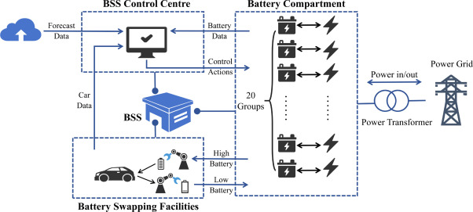
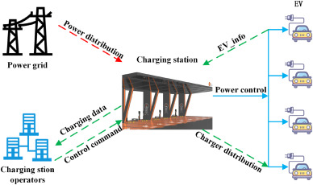
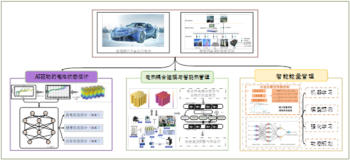

教师团队
Faculty Members
刘博 教授
👤 个人简介
刘博，教授，博士生导师，毕业于美国 Rutgers University，获博士学位。现任计算机与信息学院（人工智能学院）教授，时空智能实验室负责人。长期从事时空数据挖掘、城市计算及人工智能领域的研究工作，在 AAAI、KDD、WWW 等国际顶级会议和期刊上发表学术论文 50 余篇。
主持国家自然科学基金重点项目、国家重点研发计划课题等多项国家级科研项目。荣获教育部自然科学一等奖、省科技进步一等奖等多项荣誉。担任多个国际期刊编委及顶级会议领域主席，致力于推动时空智能技术在智慧城市、智能交通等领域的落地应用。
研究方向

时空数据挖掘与预测
研究海量时空数据中的隐藏模式和规律，开发深度学习模型用于时空序列预测、异常检测和模式挖掘。应用于交通流量预测、人群流动分析、环境监测等领域，与城市管理部门合作推动智慧城市建设。

城市计算与智能交通
利用人工智能技术解决城市交通问题，涵盖交通信号优化、路径规划、共享出行调度等场景。结合实时交通数据和历史轨迹数据，通过强化学习实现交通资源的动态优化配置。

时空知识图谱
构建时空知识图谱并研究其推理方法，将结构化知识与深度学习模型结合，提升时空智能模型的可解释性和推理能力。应用于事件预测、因果分析等高级任务。

李晓芳 硕士生导师
👤 个人简介
李晓芳，硕士生导师，毕业于中国科学技术大学，获博士学位。现任智能车辆工程系教师，主要研究方向为车辆工程与时空智能交叉领域。在智能交通系统、车辆轨迹分析及驾驶行为识别等方面具有深厚的研究积累。
主持多项省部级科研项目及企业合作项目，发表高水平学术论文 30 余篇。致力于将人工智能技术应用于智能网联汽车领域，推动车辆工程学科的智能化转型，培养了一批优秀的硕士研究生。
研究方向

时空序列建模
研究时空序列的高效建模方法，开发基于 Transformer、RNN 等架构的预测模型。关注长序列依赖建模、多尺度特征融合等关键技术，提升预测精度和效率。

强化学习与智能决策
将深度强化学习应用于时空决策问题，研究多智能体协作、奖励函数设计、样本效率优化等方法。应用于交通信号控制、资源调度等动态决策场景。

移动计算与位置服务
研究移动环境下的计算任务调度和位置服务优化，关注边缘计算、任务卸载、服务质量保障等问题。为移动应用提供高效可靠的时空智能服务。

王伟 硕士生导师
👤 个人简介
王伟，硕士生导师，研究生（博士）毕业，获博士学位。现任智能科学与技术系教师，办公地点位于翡翠湖校区科教楼 B 座 604。主要研究兴趣集中在位置服务、时空数据隐私保护及联邦学习等领域。
近年来在隐私计算与分布式机器学习方面取得了显著进展，发表多篇高水平学术论文。主持多项国家级及省部级科研项目，与多家知名企业建立了良好的合作关系，致力于解决实际应用中的数据隐私与安全挑战。
研究方向

位置服务与推荐系统
研究基于位置的个性化推荐算法，融合用户偏好、时空上下文和社会关系等多源信息。开发高效的推荐引擎，为用户提供精准的地点、路线和活动推荐。

时空数据隐私保护
研究时空数据的隐私保护技术，包括差分隐私、k-匿名、轨迹隐私等方法。在保障数据可用性的同时，有效防止用户位置隐私泄露，为合规的数据共享提供技术支撑。

联邦学习与分布式计算
研究联邦学习在时空数据分析中的应用，解决数据孤岛问题。开发高效的联邦训练算法，在保护数据隐私的前提下实现多机构协作建模，提升模型泛化能力。
王丽 讲师
👤 个人简介
王丽，讲师，博士研究生毕业，获博士学位，毕业于中国科学技术大学。现任汽车与交通工程学院教师，办公地点位于能动楼 212 东。主要研究方向为时空知识图谱、因果推理及可解释人工智能。
在知识图谱构建与推理、因果发现等领域具有扎实的理论基础和丰富的实践经验。发表多篇高水平学术论文，参与多项国家级科研项目。致力于将可解释 AI 技术应用于交通领域，提升智能系统的可信度与透明度。
研究方向

时空知识图谱构建
研究时空知识图谱的自动构建方法，包括实体抽取、关系识别、时空属性标注等技术。构建大规模的时空知识库，为下游应用提供结构化知识支撑。

因果推理与时空分析
将因果推理方法应用于时空数据分析，研究因果发现、因果效应估计、反事实推理等技术。提升模型的可解释性，支持更可靠的决策制定。

可解释人工智能
研究深度学习模型的可解释性方法，包括注意力可视化、特征重要性分析、规则提取等技术。让黑盒模型变得透明可信，促进 AI 在关键领域的落地应用。